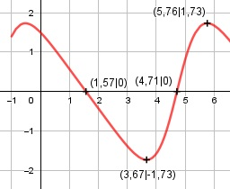

Aufgabe 181 3 * cos x x im Bogenmaß f(x) = ------------ 2 + sin x Quotientenregel erste Ableitung: u = 3 * cos x, u' = -3 * sin x v = 2 + sin x, v' = cos x -3*sin x*(2 + sin x) - cos x*3*cos x f'(x) = --------------------------------------- (2 + sin x)2 -6 * sin x - 3 sin2 x - 3 cos2 x f'(x) = ----------------------------------- (2 + sin x)2 -6 * sin x - 3 * (cos2 x + sin2x) f'(x) = ------------------------------------ (2 + sin x)2 -6 * sin x - 3 f'(x) = ----------------- (2 + sin x)2 Quotientenregel und Kettenregel zweite Ableitung: u = -6 * sin x - 3, u' = -6 * cos x v = (2 + sin x)2, v' = 2 * (2 + sin x) * cos x v' = 2 * cos x * (2 + sin x) -6 * cos x * (2 + sin x)2 f''(x) = --------------------------- - (2 + sin x)4 2 * cos x * (2 + sin x) * (- 6 * sin x - 3) - ---------------------------------------------- (2 + sin x)4 (2 + sin x)*[-12*cos x f''(x) = ------------------------- - (2 + sin x)4 6*cos x*sinx + 12*cos x*sin x + 6*cos x] - ------------------------------------------- (2 + sin x)4 -6 * cos x + 6 * sin x * cos x f''(x) = ----------------------------------- (2 + sin x)3 -6 * cos x * (1 - sin x) f''(x) = --------------------------- (2 + sin x)3 Zur Beurteilung, ob f'''(x) ≠ 0: u = -6 * cos x * (1 - sin x) Produktregel: u' = 6*sin x * (1 - sin x) - cos x*(-6 * cos x) u' = 6 sin x - 6 sin2 x + 6 cos2x u' 6 sin x - 6 sin2 x + 6 cos2 x f'''(x) = --- = ------------------------------- v (2 + sin x)3 ist ≠ 0 für alle x Definitionsbereich: 0 ≤ x ≤ 2π Symmetrie zur y-Achse bzw. zum Punkt (0|0): 3 * cos (-x) 3 * cos x f(-x) = -------------- = ------------- ≠ f(x) 2 + sin (-x) 2 – sin x --> keine Achsensymmetrie 3 * cos x 3 * cos x -f(-x) = - ----------- = ------------ ≠ f(x) 2 – sin x -2 + sin x --> keine Punktsymmetrie Wertebereich: -1,73 ≤ f(x) ≤ 1,73 (siehe Extrempunkte) Nullstellen: f(x) = 0 3 * cos x ---------- = 0 |*(2 + sin x) 2 + sin x 3 * cos x = 0 |:3 cos x = 0 x1 = π/2 = 1,57 ≙ 90° N1(1,57|0) x2 = (3/2)π = 4,71 ≙ 270° N2(4,71|0) Schnittpunkt mit der y-Achse: x = 0 3 * cos 0 f(0) = ------------ = 1,5 2 + sin 0 Sy(1,5|0) Extrempunkte: f'(x) = 0 -6 * sin x - 3 ----------------- = 0 |*(2 + sin x)2 (2 + sin x)2 -6 * sin x - 3 = 0 |+3 -6 * sin x = 3 |:(-6) sin x = -0,5 x1 = (7/6)π = 3,67 ≙ 210° 3 * cos 3,67 f(3,67) = --------------- = -1,73 2 + sin 3,67 -6 * cos 3,67 * (1 - sin 3,67) f''(3,67) = -------------------------------- > 0 (2 + sin 3,67)3 --> Tiefpunkt(3,67|-1,73) x2 = (11/6)π = 5,76 ≙ 330°, 3 * cos 5,76 f(5,24) = -------------- = 1,73 2 + sin 5,76 -6 * cos 5,76 * (1 - sin 5,76) f''(5,76) = -------------------------------- < 0 (2 + sin 5,76)3 --> Hochpunkt(5,76|1,73) Wendepunkte: f''(x) = 0 -6 * cos x * (1 - sin x) -------------------------- = 0 |*(2 + sin x)3 (2 + sin x)3 -6 * cos x * (1 - sin x) = 0 -6 * cos x = 0|:(-6) cos x = 0 x1 = π/2 = 1,57 ≙ 90° WP1(1,57|0) x2 = (3/2)π = 4,71 ≙ 270° WP2(4,71|0) 1 - sin x = 0 |+sin x sin x = 0 --> x1 = π/2, x2 = (3/2)π Graph:
